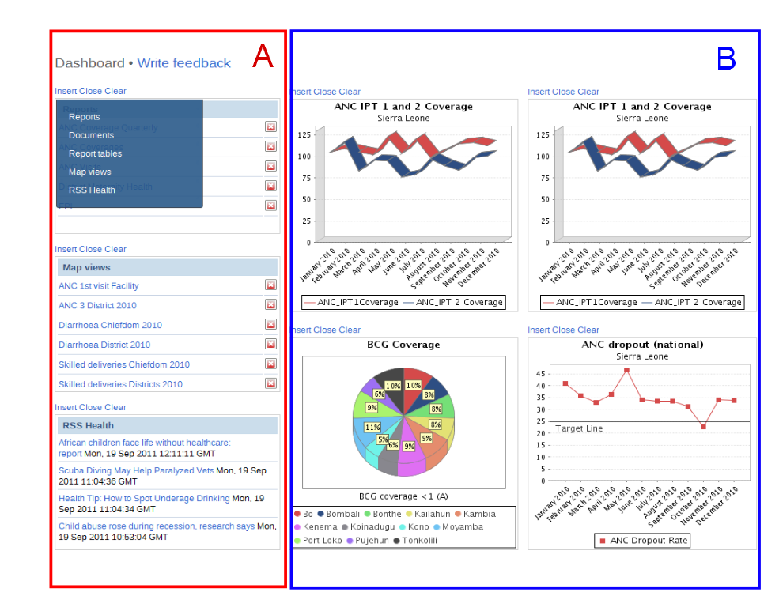

Table of Contents
Dashboards are intended to provide quick access to individual users to the data which has been stored in DHIS2. Dashboards consist of several sections, some of which provide links to reports or mapview which have already been defined. Other sections of the dashboard allow users to add charts which have been defined and made available through the charting module.
The dashboard is divided into two main sections. The right-side pane (denoted as A in the screenshot below) can be used to contain links to reports, documents (static reports), report tables, map views, and an RSS Health feed. The left-side zone (denoted as B in the screen shot) can be used to contain up to six separate charts which have been previously created in the charting reporting module.
|  |
In this screen shot, the dashboard has already been populated with a number of reports and mapviews. Simply clicking on one of the blue links will bring you automatically to the report or map view. Clicking on one of the charts will display a larger chart, which you can save as an image, and include in a report or other document.
You can redefine the structure of the dashboard by clearing the each of the windows by clicking the "Clear" link. By clicking "Insert" again, you can then select a new chart to appear in the window.
All reports, documents, report tables and charts can be added to the list of available options by clicking on the "Add to dashboard" icon in each of the respective modules. Please refer to the sections to each of the sections in this manual for more detailed instructions. Once you have added the object to the list of available objects, you can"Insert" it on the dashboard.
![[Note]](resources/images/admon/note.png) | Note |
|---|---|
|
Dashboard are configured for each individual user. |